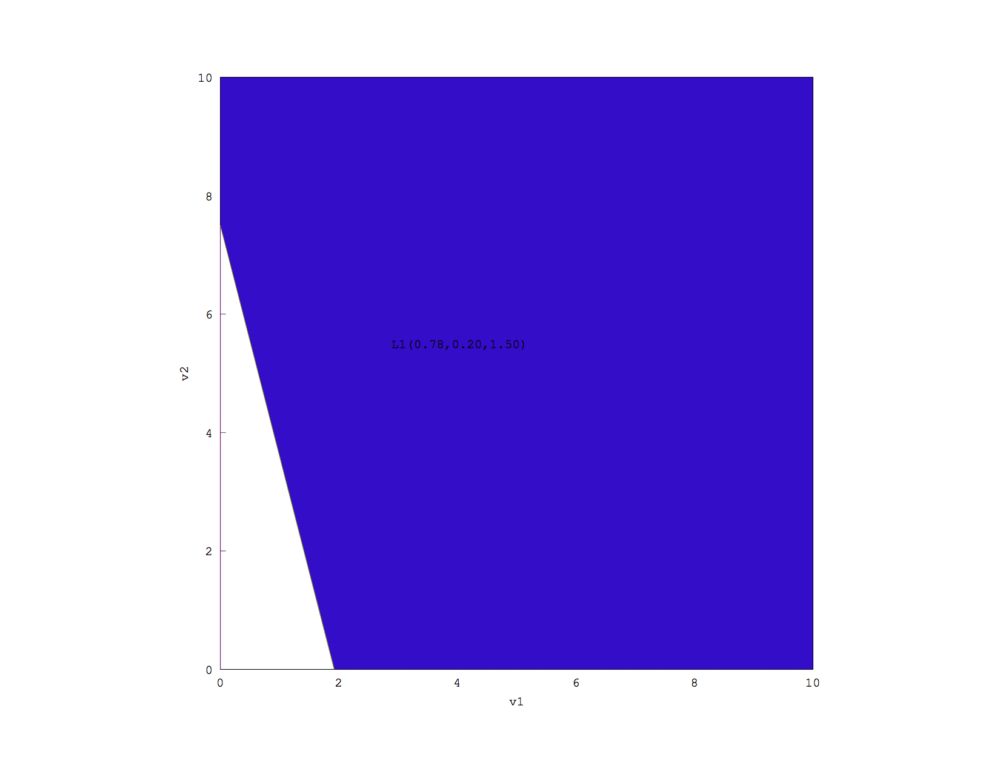

This is the first draft of a page describing my research in mechanism design carried out under the guidance of Prof. Jason Hartline, Northwestern University. This work is still in progress. Please check back for more updates. This webpage is best viewed in Firefox. In case there is a problem viewing this page in your browser, please refer this pdf.
Myerson’s seminal work in mechanism design describes what optimal mechanisms in auctions for single-dimensional unit-demand agents look like [1]. However, not much is known about optimal mechanisms for multi-dimensional agents and indeed, some of the results that hold true for single dimensional agents do not hold true for multi-dimensional ones. For example, optimal mechanisms for single-dimensional agents are deterministic [1] while those for multi-dimensional agents may be randomized as noted independently by Thanassoulis [2] and Manelli and Vincent [3]. We use a geometric approach to explore the structure of optimal mechanisms for multi-dimensional agents to derive an intuition for their economic properties.
The central problem is that computing the optimal mechanism for multi-dimensional agents is intractable for higher dimensions. The next best one can do is to use mechanisms that may not be optimal, but are close to optimal and simple to design. This leads to some important questions: how bad would these simple mechanisms be? How can we design mechanisms that are simple yet close to optimal? If we impose certain restrictions on the agent preferences, do the optimal mechanisms become simpler? Obtaining good bounds for these scenarios and understanding what impact the type distribution of the agent has on the form of these mechanisms, is important in answering these questions.
The optimal mechanism design problem can be expressed as an LP with constraints that impose a convex structure on the solution. The LP alone does not give much insight into the kind of behavior to expect of the mechanism, but certain preliminary geometric observations suggest that there are underlying patterns which we can exploit and derive meaningful correlations from. The hope thus, is that by creating tools to visualize these mechanisms we can perform a series of experiments and seek answers to many relevant questions. For example, can we maybe understand some properties of the optimal mechanism and try to emulate those properties, like rules of thumb in our approximate mechanisms? What kind of distributions lead to what kind of outcomes (i.e. can we come up with some empirical examples for types of outcomes)? By observing the structure of optimal mechanisms for certain distributions, can we say something about the optimal mechanisms for some other similar distributions? How do these mechanisms behave when there are some additional constraints like the supply constraint or the allocation constraint? How robust are these outcomes? By answering these and a host of other questions, we hope to get an intuition for, and better understand the underlying geometry of these mechanisms for the multi-dimensional cases and perhaps, even find a possible direction for being able to come up with a generalized theory that would apply to multiple as well as single dimensional situations.
Consider a seller having items to sell and a customer (henceforth called agent) who wants to buy one of the items (i.e. the customer is a unit-demand agent). The agent has a private value for each of the items which is known only to herself. Each such set of values for the m items describes the “type” of the agent and such an agent is called an -dimensional agent. To be able to analyze these mechanisms using computers, we consider the type space of the agent to be finite and discrete. Let be the number of different types the agent can take, denote the probability that the agent is of type and denote the value that agent with type has for item .
The seller wants to sell the items in a way that maximizes his revenue. It has been shown that instead of using fixed prices for the m items, a seller in the case of a multi-dimensional agent has a better chance of achieving a higher revenue if he uses a randomized approach [2][3]. He may do so by publishing a set of “lotteries” from which the agent can choose the one which maximizes her “utility”, based on her type. A lottery is simply an option of the form where is the probability with which the agent will be given item j and p denotes the amount she would have to pay, should she choose to take this lottery, and the utility that an agent derives from buying such a lottery is given by . Note that (the inequality implies that even after buying the lottery, there is a chance that the agent may not be assigned anything). Thus, once the agent chooses a lottery, she will be assigned one (or none) of the m objects based on the probabilities specified in the lottery.
The seller though unaware of the exact type of the agent, has a joint probability distribution of the agent’s values for the items. The challenge for the seller thus, is: to design a revenue-optimal set of lotteries given a probability distribution for the agent preferences. We consider the zero lottery denoted by L0, which neither sells anything (all are zero) nor collects any payment, to be an option available by default. This implies that the agent has the option to buy nothing and hence her maximum utility is always non-negative. For the agent to prefer a particular lottery, her utility from the lottery has to be atleast as much as her utility from all other lotteries, including the zero lottery.
In addition to the above, the seller has a supply constraint which restricts the fraction of times the seller is allowed to make a sale to . We call this the problem of optimizing the revenue subject to an ex-ante supply constraint (ex-ante meaning before the type of the agent is drawn). Thus, if we let denote the lottery i.e. the lottery that is optimal for agent type , then the solution for the above problem is given by the following linear program:
Running this LP on the given input distribution of the agent, gives us (at most) n lotteries which would fetch the seller the maximum expected revenue. Note that there can be more than one type of agents that prefer the same lottery and hence the number of unique lotteries may be less than n.
We define some useful quantities which will help us compare and analyze different mechanisms:
Quantile: On realizing her type, the agent chooses the lottery that maximizes her utility. As a result, for a given set of lotteries, a mechanism is simply a mapping from the agent types to the set of lotteries. Thus, corresponding to each type there is a total probability that the type will be served (given by of their preferred lottery). We say that a type is stronger than some other type if there is a higher chance of it being served than the other type, and we use quantile as a measure of this relative strength of types. In particular, the quantile of a type is if the probability that some other type is served over this type is . Thus, type with the largest probability of being served is said to have while the type with lowest probability of being served is said to have .
Allocation Rule: The probability of being served as a function of quantile.
Revenue Curve: Optimal revenue as a function of ex-ante service probability .
To derive an intuition for the structure of these mechanisms, we “plot” these lotteries and observe what they look like. How does one “plot” these lotteries? Consider what happens when there is only one lottery . If we consider the x and y axes to represent and resp, then the 1st quadrant of the Euclidean plane represents our type space and we can divide this plane into regions denoting the set of types that prefer L1 and L0 resp.
The utility function for L1 is given by . Consider the set of points that satisfy the equation u = 0 i.e. . This is the equation of a line and it divides the space into 2 regions, one where the utility is positive and one where it is negative. Let denote this line (i.e. set of points where L0 and L1 give the same utility). If this lottery was the only option available, all agents with type in the positive region of this lottery would have bought this lottery and those in the negative region would have preferred to not buy anything (or in other words, they would have preferred to choose L0). Thus a plot of this mechanism highlighting the region where L1 is preferred will be as shown in Fig 1:
Note on the color-coding: We will use blue and red to denote the two items. Thus, a region where the preferred lottery serves item 1 with probability x1 and item 2 with probability x2 will be colored a shade of purple that has x1 and x2 amounts of blue and red in it, respectively.
The line itself represents the set of types for which the lottery gives zero utility. Thus the types that lie on this line are indifferent between the two lottery options on either side, namely L0 and L1. Additionally, for the purpose of algorithmically generating this plot, once we fix the boundaries of our plot, we can view the region representing the set of types that prefer L1 to be represented by a polygon.What happens as we add more lotteries? Suppose there are 2 lotteries, and and assume that the lines corresponding to these lotteries intersect in the first quadrant. Similar to the previous case, each lottery has a positive and a negative region. As shown in Fig 2, of the 4 regions created there will be one region where L1 gives positive utility while L2 gives negative (and hence L1 will be preferred in this region); one where L2 gives positive utility and L1 gives negative (hence L2 will be preferred here) and one where both will give negative utility (where L0 will be preferred). But what happens in the region where both are positive? Which lottery does an agent in that region prefer?
The agent prefers different lotteries on either sides of this region. Moreover, our utility functions corresponding to the two lotteries are continuous linear functions. Clearly, there must be a definite set of points where the preference shifts from one to the other. The set of all such points is given by the function: which also represents a line. Let denote this line (i.e. set of points where L1 and L2 give the same utility). This line divides the fourth region into 2 parts and on one side of this line, L1 is preferred while on the other, L2 is preferred. Note that because of the monotonic nature of our utility functions, all the regions where L1 is preferred are adjacent and form a continuous area, and the same is true for L2. Hence once again, if we fix the boundaries of our plots, then all such regions corresponding to one lottery together form a polygon. In fact, because of the monotonic nature of the utility functions, these polygons are convex in nature (if is preferred over at points A and B, then must be preferred over at every point between A and B). Thus every lottery has a convex polygon corresponding to it. For the two lottery system, the picture would look as shown in Fig 3:
Extending the above analysis for the case of n lotteries, we observe that there will be n lines corresponding to the n lotteries (set of points where the n lotteries give zero utility) and there will be lines for every possible pair of lotteries, corresponding to the set of points where the max utility giving lottery shifts from one to the other. These approximately lines will result in regions in the worst case. If we were to examine each region separately and test which lottery gives maximum utility in that region, the time complexity of such an algorithm would be at least . Can we do better?
The fact that even though there are regions, our plot in the end will simply be a collection of n polygons (since every lottery is represented by a polygon), suggests that there are redundancies in the above approach and it points to the existence of a faster way of generating these polygons. We notice that the polygon corresponding to a given lottery can be bounded only by lines involving that lottery (in addition to the plot boundary lines). Thus for each lottery there are O(n) such lines and only these lines are material to generating the polygon for this lottery. The second important point to note is that with respect to any lottery , every line of the form has an orientation (i.e. whether the line bounds the polygon from above or below) and this orientation can be determined in constant time (choose a high enough point such that it lies above the line and test which of the two lotteries and gives higher utility at that point. If gives higher utility, must bound the polygon from below, if gives higher utility, must bound the polygon from above).
Keeping the above in mind, the problem of finding the regions corresponding to a lottery can be restated as the problem of finding the polygon bounded by n given lines, with a direction associated with each line.
One way of creating a polygon given lines and their orientations is to find the lower and upper hulls and combine them. Finding the upper or lower hull in this case is essentially the problem of hidden line removal (a well studied problem frequent in computer graphics) which, given some lines and a viewing direction, decides in time which parts of which lines will be visible to the viewer. The key observation here is that the slopes of the visible lines go on monotonically increasing (or decreasing) from left to right (depending on whether we are calculating the lower or the upper hull respectively). Thus we sort the lines by their slope in time and use a divide and conquer approach to determine their visibility: split the lines into left and right halves, solve for them recursively, iterate over the two sets to determine the point at which one set of lines starts overshadowing the other, and combine the two sets around this point. We run this algorithm on all lines that bound the polygon from above (and below) to get the upper (and lower) hulls respectively. We then combine the two hulls using an approach similar to that used in the conquer step of the above algorithm (this time, finding the two points at which the hulls meet, again taking time ). We repeat this process for every lottery and the resulting algorithm has time complexity .
Thus, if we start with some input probability distribution for the agent's values for the items, feed it to the above LP to obtain a set of lotteries and feed the lotteries to the plotting algorithm described above, we will have “plotted” the optimal mechanism for the given agent distribution. Fig 4 shows an example of what such a plot might like:
As stated earlier, the polygons are colorcoded to indicate the amount of the two items in the lottery corresponding to that polygon. For example, the purple region in the center reflects the fact that there is red with intensity 0.21 and blue with intensity 0.20 in this region, corresponding to the probabilities of awarding the two items respectively in that lottery. The pure red region on the other hand, signifies that agents in that area choose the lottery that gives them their favorite item.
For some specific kinds of distributions the plots look as follows:
Questions: What if the distribution is made finer? What if the x and y intervals are varied?
Thanassoulis [2] was among the first ones to realize that unlike the single-dimensional case, optimal mechanisms in the multi-dimensional case need not be deterministic but may in fact be randomized. He had first illustrated the existence of a third lottery in the case of which suggested that contrary to intuition, giving a third option which randomly assigns one of the two items, each with probability , and charges a smaller price can lead to a larger revenue. The above plot confirms his claim.
This is a special kind of distribution where the agent types are of the form with probabilities for some distributions and . It has been conjectured that posted pricing is the optimal mechanism for this distribution for . The above plot supports the conjecture.
FIG: The joint distribution got from the distributions of the individual items when the distributions of the individual items are iids is called a product distribution. The distribution in the above example is a special kind of product distribution called the “equal revenue distribution”, where the distribution of individual items is given by and .
Some more plots with random types:
As we can observe from the above plots, there are interesting structural (for example, the shapes of the polygons) and compositional (the gradual change in the color of the lotteries) properties exhibited by these optimal mechanisms. Using the above developed visualization tools we can investigate many interesting questions: How do these plots change as we vary ? Or when we add an allocation constraint? What happens when the agent has a private budget in addition to a private value for the item? These and many more such questions will be explored in coming updates.